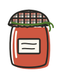
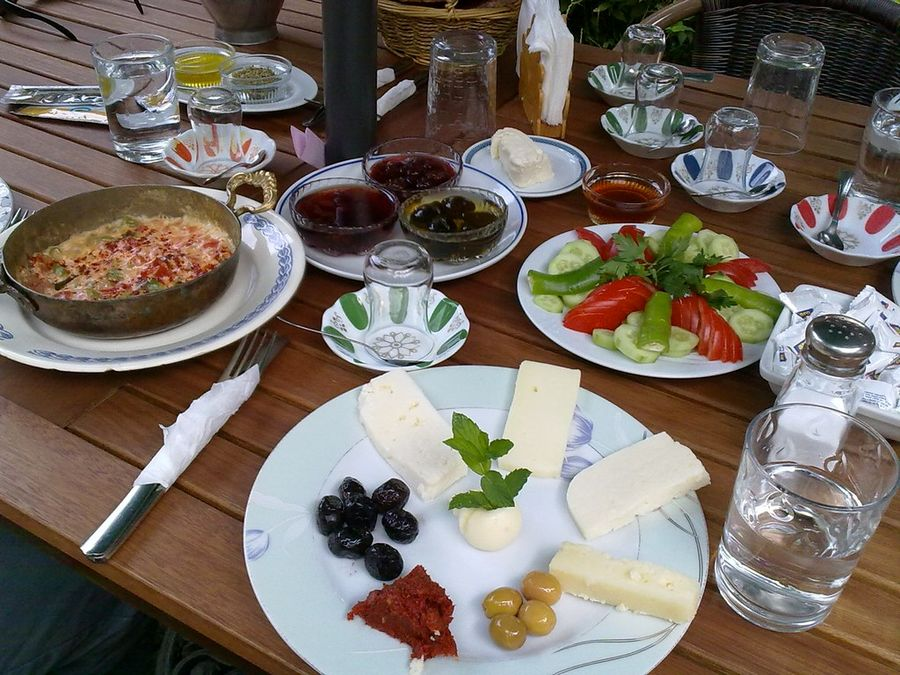
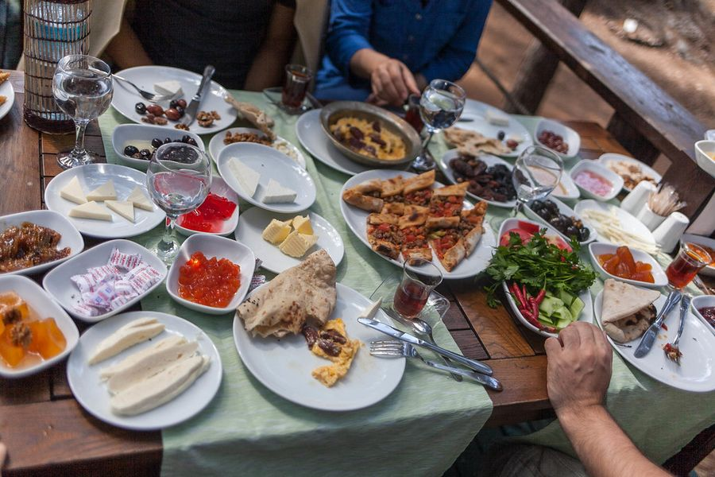

Çorbalar
- Mercimek çorbası
- Ezogelin
- Tarhana
- Yayla çorbası
Günün çorbası sabahtan belli olur; sorun.
Tarih: bugün
Burası bir fiyat listesi değil, mutfağın defter sayfası. Doğa Restaurant bir kahvaltı ve köy yemeği restoranı; sofraya gelenler güne ve mevsime göre değişebilir.
Aşağıda böyle bir mutfakta sık rastlanan tabakları, kahvaltıda adı geçen her şeyin kısa sözlüğünü ve günün listesini sormanın en kısa yolunu bulacaksınız.
Serpme kahvaltı, küçük tabaklarda pek çok lezzetin masaya birlikte gelmesidir; herkes ortadan alır, çay tazelenir, sohbet uzar. Aşağıdaki liste böyle bir sofrada sık görülenlerin defteri.




Bu liste genel bir serpme kahvaltının tarifidir. Doğa Restaurant'ın sofrasında o gün neler olduğunu ve fiyat bilgisini sormanızı öneririz.

Sofranın bugünkü hâlini merak ediyorsanız mutfağa sorun.

Köy yemeği mutfağı ocakta ağır ağır pişen tencerelerle bilinir. Aşağıdaki tarif kartları bu tür restoranlarda sık pişen yemekleri sıralıyor; o günün tenceresi değişir, gelmeden önce sormanız en doğrusu.
Günün çorbası sabahtan belli olur; sorun.
Köy mutfağının kalbi; tencere güne göre değişir.
Soğuk ya da ılık; yanında yoğurtla iyi gider.
Hangi tatlının olduğunu günün listesinde sorun.
Kartlardaki yemekler köy yemeği restoranlarında sık pişen tencerelerdir, Doğa Restaurant'ın sabit menüsü değildir. Günlük liste için aşağıdaki “Mutfağa sor” notunu kullanın.
adını duyup merak ettikleriniz
Sofrada sık geçen adlar için kısa notlar. Yabancı misafirinize anlatırken ya da ilk kez serpme kahvaltıya gelirken işe yarar.
Merak ettiklerinizi işaretleyin, mesajınızı biz yazalım; siz WhatsApp'tan gönderin. Güncel menü ve fiyat bilgisi yanıt olarak size gelir.
Mesaj hazırlayıcı tarayıcınızda JavaScript açıkken çalışır. Günün menüsünü telefonla da sorabilirsiniz: 0531 721 98 71
WhatsApp mesajınız
Mesaj kendiliğinden gönderilmez; WhatsApp açıldığında siz gönderirsiniz.